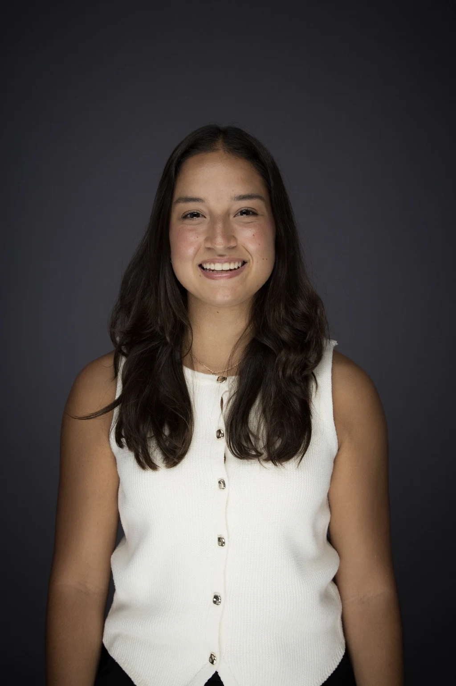
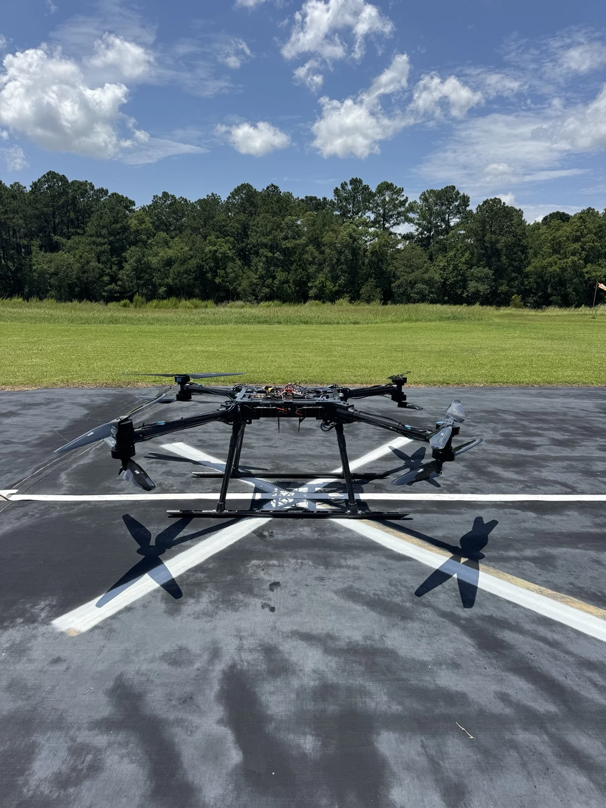

Mechanical Engineering / Robotics & Autonomous Systems
Gabriela
Mendoza
Mechanical Engineering student at Embry-Riddle Aeronautical University, concentrating in Robotics & Autonomous Systems with a minor in CAD/CAM.
I’ve completed three Operations Engineering co-op rotations at Gulfstream Aerospace across Wing Box Assembly, final-line production testing, and aircraft completions.
I’m interested in hands-on roles in Automation & Robotics, R&D, Test Engineering, and Production Engineering, where I can stay close to the physical product and be involved in developing, testing, and improving real systems.

Education
Embry-Riddle Aeronautical UniversityB.S. Mechanical Engineering
Daytona Beach, Florida
Expected graduation: May 2028
Concentration
Robotics & Autonomous Systems
Minor
CAD/CAM
Professional experience
Explore Gulfstream experienceGulfstream Aerospace — Operations Engineering Co-op
Three rotations across different stages of aircraft manufacturing and production.
Wing Box Operations Engineering
Process improvement, recurring rework, and CATIA shop aids developed with mechanics.
Final Line / Test Station
Aircraft systems validation, RF troubleshooting, and representative hydraulic testing.
Completions Operations Engineering
Build coordination, engineering readiness, and furniture electrical-test development.
Featured projects
Student & Team Engineering
MaxWeights / DARPA
Heavy-lift UAV build, integration, testing, and field support.
View case study
Women’s Baja SAE
My first engineering club and first hands-on manufacturing experience.
View case studyCATIA Design Portfolio
Advanced CATIA coursework translating real geometry into accurate models.
View case studyCAD Portfolio / ENGR 305
From reference geometry
to an organized model
Part design, surface modeling, and complex geometry in CATIA, with original coursework models presented in their blue-purple visual identity.
Explore CAD Portfolio
Resume / Contact